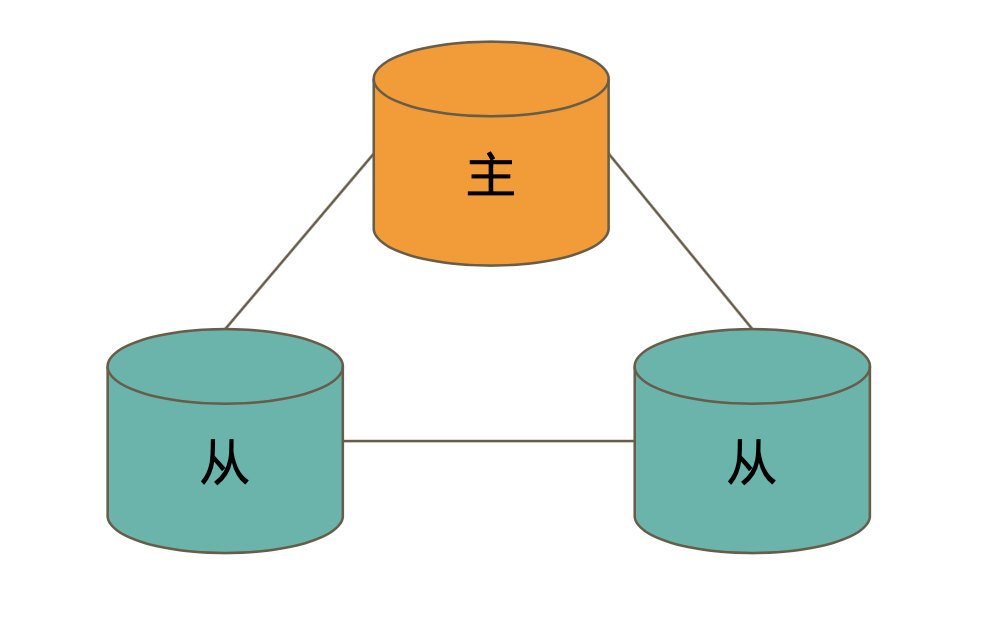
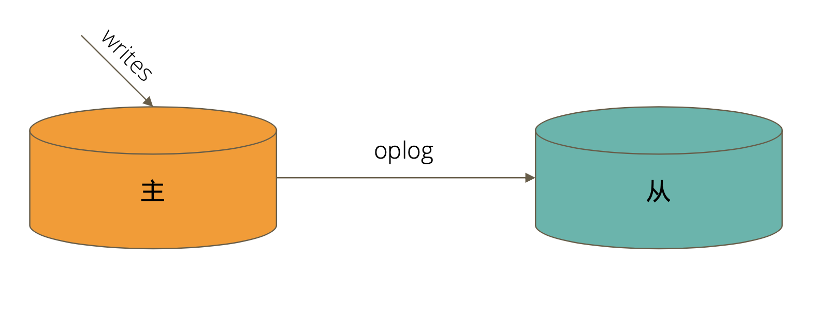
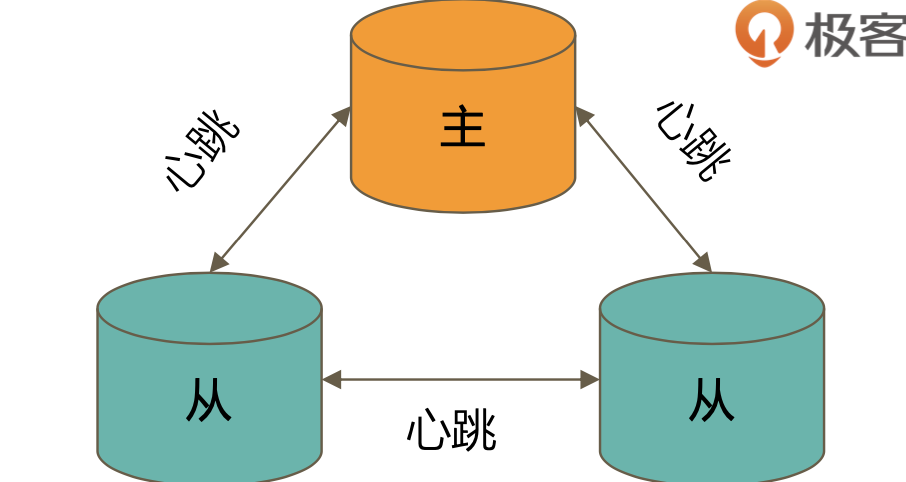

MongoDB复制集原理及搭建
在学习之前先要了解一下，MongoDB的复制集有哪些好处，为什么我们要用到复制集
复制集群的主要意义是在于实现服务的高可用能够提供不间断的数据支持，MongoDB本身是支持这种特性的。不需要第三方的插件。要实现复制集的高可用，就必须要依赖以下两个功能：
- 能够在数据写入时快速的将数据同步到另外的节点
- 当写入的节点异常时，集群能够自动选举出一个新的替代节点
复制集的作用
复制集群除了能够实现服务的高可用外，还提供了其他的附加作用
- 数据分发：将数据从一个地区同步到另外一个地区，每个程序就可以访问就近的数据节点，避免访问异地数据库，减少延迟
- 读写分离： 不同类型的操作会在不同的节点上进行，避免单个服务器压力过大
- 异地容灾： 能够在数据中心故障的时候切换到异地
复制集的组成
一个典型的复制集群至少要有三个以上的节点组成：

主节点：负责写入数据和选举投票
从节点：复制主节点上的数据和选举投票
MongoDB不在建议使用投票节点
复制集中数据是如何复制的
在mongo中对数据的操作到达主节点的时候都会被记录下来，这些记录就是oplog。从节点通过在主节点上打开一个tailable游标不断获取主节点上新的oplog，并在自己的节点上进行回放，以此来保持和主节点的数据同步

通过选取完成故障恢复

关于MongoDB的复制集我们要知道以下几点：
- 具有投票权的节点两两之间互相发送心跳
- 当5次未收到心跳包时判断为节点失联
- 如果失联的是主节点，则会进行选举
- 如果失联的是从节点，则不会进行选举
- 选举基于RAFT一致性算法实现，选举的成功必要条件是大多数节点存活
- 复制集最多有50个节点，最多有7个投票节点
影响选举的主要因素
- 必须大多数节点存活
- 被选举为主节点的节点必须：
- 能够与大多数节点建立连接
- 具有教新的
oplog - 具有高优先级（如果设置的话）
常见选项
v：是否具有投票权priority：优先级，优先级越高的节点优先成为主节点，优先级为0则不会成为主节点hidden：复制数据，对应用不可见。可以拥有投票权，但是优先级必须设置为0slaveDelay：复制n秒之前的数据，保持与主节点的时间差
注意事项
- 集群当中的每个机器都需要同样的配置，因为不知道什么时候哪个节点会成为主节点
- 每个机器上的软件版本必须一致
- 增加节点不会增强写性能
搭建复制集Demo
下面在Mac上模拟一个具有三个节点的复制集demo
先创建三个目录，分别存放三个mongo进程需要的文件
# qaf in ~/data [22:31:23]
$ mkdir -p ~/data/db{1,2,3}
# qaf in ~/data [22:31:32]
$ ls
db1 db2 db3编写配置文件mongod.conf，修改其中的参数，分别放到db1/db2/db3中
systemLog:
destination: file
path: /data/db1/mongod.log
logAppend: true
storage:
dbPath: /data/db1
net:
bindIp: 0.0.0.0
port: 28017
replication:
replSetName: rs0 # 复制集名
processManagement:
fork: true # 在后台运行启动三个mongo进程
$ mongod -f db1/mongod.conf
2020-03-16T23:24:03.120+0800 I CONTROL [main] Automatically disabling TLS 1.0, to force-enable TLS 1.0 specify --sslDisabledProtocols 'none'
about to fork child process, waiting until server is ready for connections.
forked process: 93736
child process started successfully, parent exiting
# qaf in ~/data [23:24:04]
$ mongod -f db2/mongod.conf
2020-03-16T23:24:09.914+0800 I CONTROL [main] Automatically disabling TLS 1.0, to force-enable TLS 1.0 specify --sslDisabledProtocols 'none'
about to fork child process, waiting until server is ready for connections.
forked process: 93767
child process started successfully, parent exiting
# qaf in ~/data [23:24:10]
$ mongod -f db3/mongod.conf
2020-03-16T23:24:15.917+0800 I CONTROL [main] Automatically disabling TLS 1.0, to force-enable TLS 1.0 specify --sslDisabledProtocols 'none'
about to fork child process, waiting until server is ready for connections.
forked process: 93801
child process started successfully, parent exiting
# qaf in ~/data [23:24:16]
$ ps -ef | grep mongod
501 93736 1 0 11:24PM ?? 0:01.06 mongod -f db1/mongod.conf
501 93767 1 0 11:24PM ?? 0:00.79 mongod -f db2/mongod.conf
501 93801 1 0 11:24PM ?? 0:00.76 mongod -f db3/mongod.conf
501 93852 88919 0 11:25PM ttys005 0:00.00 grep --color=auto --exclude-dir=.bzr --exclude-dir=CVS --exclude-dir=.git --exclude-dir=.hg --exclude-dir=.svn mongod现在相当于是有了三个运行mongo的节点，但是他们都是独立的并没有形成一个集群，下面就配置一下，然他们成为一个复制集
初始化
> rs.initiate()
{
"info2" : "no configuration specified. Using a default configuration for the set",
"me" : "qaf.local:28017",
"ok" : 1,
"operationTime" : Timestamp(1584372633, 1),
"$clusterTime" : {
"clusterTime" : Timestamp(1584372633, 1),
"signature" : {
"hash" : BinData(0,"AAAAAAAAAAAAAAAAAAAAAAAAAAA="),
"keyId" : NumberLong(0)
}
}
}初始化之后会看到命令行提示符已经变成了 rs0,这是集群的名字，SECONDARY 后按回车会看到 PRIMARY，表示这个节点已经从从节点变为了主节点
rs0:SECONDARY>
rs0:PRIMARY>通过status命令可以看到整个复制集群的信息，members 中显示只有一个节点
rs0:PRIMARY> rs.status()
{
"set" : "rs0",
"date" : ISODate("2020-03-16T15:36:31.844Z"),
"myState" : 1,
"term" : NumberLong(1),
"syncingTo" : "",
"syncSourceHost" : "",
"syncSourceId" : -1,
"heartbeatIntervalMillis" : NumberLong(2000),
"optimes" : {
"lastCommittedOpTime" : {
"ts" : Timestamp(1584372985, 1),
"t" : NumberLong(1)
},
"readConcernMajorityOpTime" : {
"ts" : Timestamp(1584372985, 1),
"t" : NumberLong(1)
},
"appliedOpTime" : {
"ts" : Timestamp(1584372985, 1),
"t" : NumberLong(1)
},
"durableOpTime" : {
"ts" : Timestamp(1584372985, 1),
"t" : NumberLong(1)
}
},
"lastStableCheckpointTimestamp" : Timestamp(1584372935, 1),
"members" : [
{
"_id" : 0,
"name" : "qaf.local:28017",
"health" : 1,
"state" : 1,
"stateStr" : "PRIMARY",
"uptime" : 748,
"optime" : {
"ts" : Timestamp(1584372985, 1),
"t" : NumberLong(1)
},
"optimeDate" : ISODate("2020-03-16T15:36:25Z"),
"syncingTo" : "",
"syncSourceHost" : "",
"syncSourceId" : -1,
"infoMessage" : "",
"electionTime" : Timestamp(1584372633, 2),
"electionDate" : ISODate("2020-03-16T15:30:33Z"),
"configVersion" : 1,
"self" : true,
"lastHeartbeatMessage" : ""
}
],
"ok" : 1,
"operationTime" : Timestamp(1584372985, 1),
"$clusterTime" : {
"clusterTime" : Timestamp(1584372985, 1),
"signature" : {
"hash" : BinData(0,"AAAAAAAAAAAAAAAAAAAAAAAAAAA="),
"keyId" : NumberLong(0)
}
}
}通过以下命令，添加其余的两个节点，其中qaf.local是主机名，可以通过hostname获得
rs0:PRIMARY> rs.add("qaf.local:28018")
{
"ok" : 1,
"operationTime" : Timestamp(1584373330, 1),
"$clusterTime" : {
"clusterTime" : Timestamp(1584373330, 1),
"signature" : {
"hash" : BinData(0,"AAAAAAAAAAAAAAAAAAAAAAAAAAA="),
"keyId" : NumberLong(0)
}
}
}
rs0:PRIMARY> rs.add("qaf.local:28019")
{
"ok" : 1,
"operationTime" : Timestamp(1584373335, 1),
"$clusterTime" : {
"clusterTime" : Timestamp(1584373335, 1),
"signature" : {
"hash" : BinData(0,"AAAAAAAAAAAAAAAAAAAAAAAAAAA="),
"keyId" : NumberLong(0)
}
}
}在查看当前集群状态，就可以看到其余两个节点也加入进来了
rs0:PRIMARY> rs.status()
{
"set" : "rs0",
"date" : ISODate("2020-03-16T15:43:39.164Z"),
"myState" : 1,
"term" : NumberLong(1),
"syncingTo" : "",
"syncSourceHost" : "",
"syncSourceId" : -1,
"heartbeatIntervalMillis" : NumberLong(2000),
"optimes" : {
"lastCommittedOpTime" : {
"ts" : Timestamp(1584373416, 1),
"t" : NumberLong(1)
},
"readConcernMajorityOpTime" : {
"ts" : Timestamp(1584373416, 1),
"t" : NumberLong(1)
},
"appliedOpTime" : {
"ts" : Timestamp(1584373416, 1),
"t" : NumberLong(1)
},
"durableOpTime" : {
"ts" : Timestamp(1584373416, 1),
"t" : NumberLong(1)
}
},
"lastStableCheckpointTimestamp" : Timestamp(1584373416, 1),
"members" : [
{
"_id" : 0,
"name" : "qaf.local:28017",
"health" : 1,
"state" : 1,
"stateStr" : "PRIMARY",
"uptime" : 1176,
"optime" : {
"ts" : Timestamp(1584373416, 1),
"t" : NumberLong(1)
},
"optimeDate" : ISODate("2020-03-16T15:43:36Z"),
"syncingTo" : "",
"syncSourceHost" : "",
"syncSourceId" : -1,
"infoMessage" : "",
"electionTime" : Timestamp(1584372633, 2),
"electionDate" : ISODate("2020-03-16T15:30:33Z"),
"configVersion" : 3,
"self" : true,
"lastHeartbeatMessage" : ""
},
{
"_id" : 1,
"name" : "qaf.local:28018",
"health" : 1,
"state" : 2,
"stateStr" : "SECONDARY",
"uptime" : 88,
"optime" : {
"ts" : Timestamp(1584373416, 1),
"t" : NumberLong(1)
},
"optimeDurable" : {
"ts" : Timestamp(1584373416, 1),
"t" : NumberLong(1)
},
"optimeDate" : ISODate("2020-03-16T15:43:36Z"),
"optimeDurableDate" : ISODate("2020-03-16T15:43:36Z"),
"lastHeartbeat" : ISODate("2020-03-16T15:43:38.104Z"),
"lastHeartbeatRecv" : ISODate("2020-03-16T15:43:38.135Z"),
"pingMs" : NumberLong(0),
"lastHeartbeatMessage" : "",
"syncingTo" : "qaf.local:28017",
"syncSourceHost" : "qaf.local:28017",
"syncSourceId" : 0,
"infoMessage" : "",
"configVersion" : 3
},
{
"_id" : 2,
"name" : "qaf.local:28019",
"health" : 1,
"state" : 2,
"stateStr" : "SECONDARY",
"uptime" : 83,
"optime" : {
"ts" : Timestamp(1584373416, 1),
"t" : NumberLong(1)
},
"optimeDurable" : {
"ts" : Timestamp(1584373416, 1),
"t" : NumberLong(1)
},
"optimeDate" : ISODate("2020-03-16T15:43:36Z"),
"optimeDurableDate" : ISODate("2020-03-16T15:43:36Z"),
"lastHeartbeat" : ISODate("2020-03-16T15:43:38.104Z"),
"lastHeartbeatRecv" : ISODate("2020-03-16T15:43:38.882Z"),
"pingMs" : NumberLong(0),
"lastHeartbeatMessage" : "",
"syncingTo" : "qaf.local:28018",
"syncSourceHost" : "qaf.local:28018",
"syncSourceId" : 1,
"infoMessage" : "",
"configVersion" : 3
}
],
"ok" : 1,
"operationTime" : Timestamp(1584373416, 1),
"$clusterTime" : {
"clusterTime" : Timestamp(1584373416, 1),
"signature" : {
"hash" : BinData(0,"AAAAAAAAAAAAAAAAAAAAAAAAAAA="),
"keyId" : NumberLong(0)
}
}
}下面通过在master节点上写数据，在从节点上读数据来验证下集群的功能
首先在master节点上写入一条数据
rs0:PRIMARY> use test
switched to db test
rs0:PRIMARY> db.user.insertOne({"user":"LiMi"})
{
"acknowledged" : true,
"insertedId" : ObjectId("5e6f9f85fe71466240a3ee45")
}然后在从节点上读数据
# mongo --port 28019
rs0:SECONDARY> db.test.find()
Error: error: {
"operationTime" : Timestamp(1584373686, 1),
"ok" : 0,
"errmsg" : "not master and slaveOk=false",
"code" : 13435,
"codeName" : "NotMasterNoSlaveOk",
"$clusterTime" : {
"clusterTime" : Timestamp(1584373686, 1),
"signature" : {
"hash" : BinData(0,"AAAAAAAAAAAAAAAAAAAAAAAAAAA="),
"keyId" : NumberLong(0)
}
}
}会发现报错了。这是因为从节点默认是不能读取数据的，我们设置从节点可以读取数据
rs0:SECONDARY> rs.slaveOk()
rs0:SECONDARY> db.user.find()
{ "_id" : ObjectId("5e6fa04bfe71466240a3ee46"), "user" : "LiMi" }从节点会从主节点产生的oplog中进行回放，把数据同步到从节点。所以也能从从节点中读取数据了
补充
oplog是一个capped collection，是有大小上限的，如果超过了上限，就会删除旧的数据，增加新的数据
在MongoDB 4.0+中，oplog会超过设定的大小，避免删除未被从节点回放的oplog
oplog是幂等性的，既一条记录不管被重放多少次，数据库中的数据是不会变的
查看oplog的信息
rs0:PRIMARY> rs.printReplicationInfo()
configured oplog size: 192MB
log length start to end: 80450secs (22.35hrs)
oplog first event time: Mon Mar 16 2020 23:30:33 GMT+0800 (CST)
oplog last event time: Tue Mar 17 2020 21:51:23 GMT+0800 (CST)
now: Tue Mar 17 2020 21:51:27 GMT+0800 (CST)查看oplog回放的情况
rs0:PRIMARY> db.printSlaveReplicationInfo()
source: qaf.local:28018
syncedTo: Tue Mar 17 2020 21:52:33 GMT+0800 (CST)
0 secs (0 hrs) behind the primary
source: qaf.local:28019
syncedTo: Tue Mar 17 2020 21:52:33 GMT+0800 (CST)
0 secs (0 hrs) behind the primary